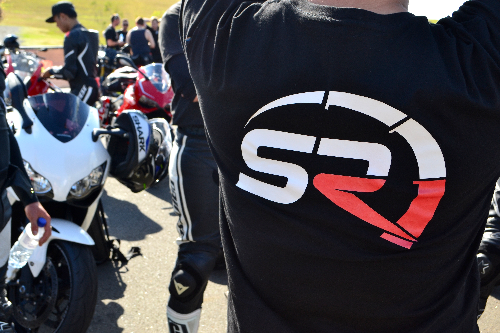

My Projects
Outside the regular 9-5, I love to make things and connect with people. I have worked along side a motorbike group, restuarant owners, and played with my own personal clothing graphics. Have a look at my dribbble profile to see some of my illustations.
Dribbble Profile


Rainbow Fruit
Rainbow Fruit Logo. In the small town of Rainbow Beach, QLD, a fruit and vegetable barn uses my logo
to brand throughout the entire shop.


Sydneys Riders
Sydneys Riders is a communtiy of motorbike riders and for the last year and a half I have worked
along side the founders, helping them with there digital platform and graphics. Designer for Sydneys
Riders to me isn’t just a side project, I am apart a community that I am actively promoting and
partaking in. My position allows me to be a creative thrill seeker. I take care of the tech and
graphic side of things whilst riding amongst free spirited folks. Part of what I do for Sydneys
Riders includes:
- Part manage the social media pages (MeetUp, Facebook)
- Created the website, making information more accessible, Squarespace platform
- Introduced email campaigns and automation
- Designed the new logo for SR’s rebrand
- Actively engaging and promoting SR girls. A group purely focusing on encouraging women to ride.
- Creating the logo and design campaign for their annual film festival
- Marketing material to send to sponsors
